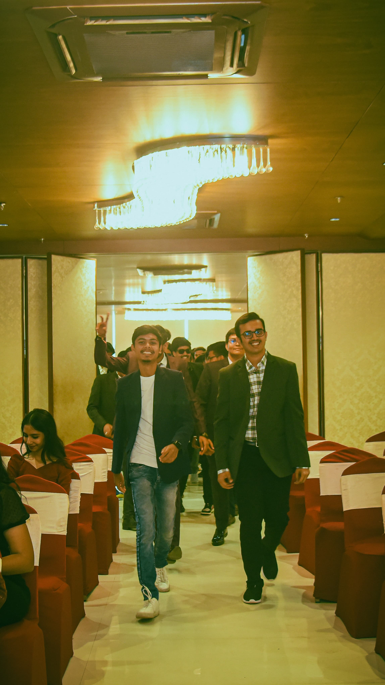
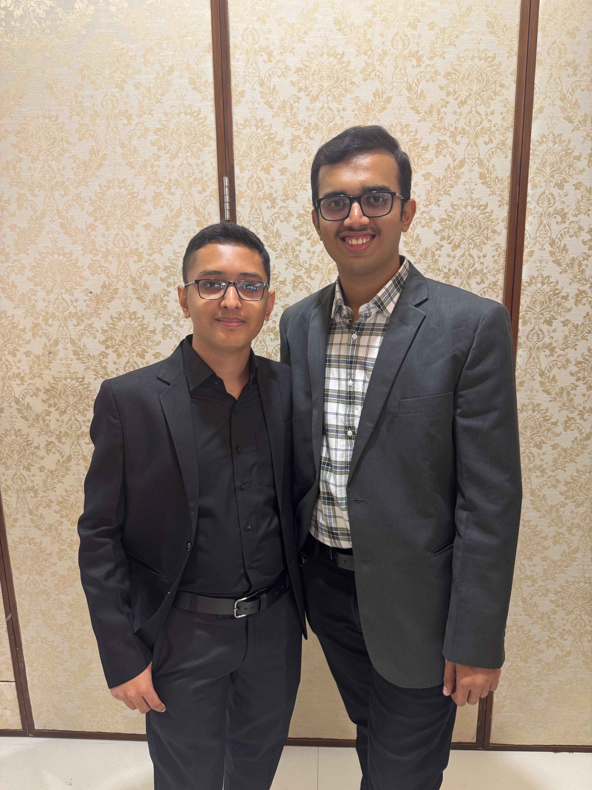

song dedicated to all of them(use headphones)
When you see a guy wearing specs and teaching something either you believe he’s professor or some topper, Idk why but I’m always that guy because whenever I interact with stranger probability that he/she assumes I’m topper is 11/10.
But you can see my basic probability is weak,I’m not the guy socring 9.5+ cgpa but yes,Im Curious guy so you find me asking stupid questions and Explorer so you find me doing random shits.
But you can see my basic probability is weak,I’m not the guy socring 9.5+ cgpa but yes,Im Curious guy so you find me asking stupid questions and Explorer so you find me doing random shits.
He introduced me to “backchodi” ,how to have fun but more than that he changed my perspective of life.
I always used to believe that Life must have purpose, we should know WHY before we do anything but than I realised that this is way I’m leaving life intellectually not experientially .
So thank you Dharmik to find hidden Bakchod side of me in public.
(I stil think I look stupid in this photo !)
(idk why that day I want to dance on antu-natu especially)
Mostly our friends say good stuff face to face and than do back bitching but I’m fortunate have few people who give reality check upfront.
My conversations with Harshil is mostly like “Smart Mirror” who knows when to reflect what ,when to showcase how brillant my ideas are at the same time having audacity to tell what kind of bullsh*it thing I’m doing ,not giving importance to things that really matters.
Harshil is the guy who’s always pushed me to do things which I would never think of doing by myself.
So thank you Harshil for always pushing me beyond my limits.
(ha bhai yeh blog likh ke java ka project hi banana ja raha hu,pakka timepass nahi karunga)
Have you ever seen hostel room of boys ? yes, I’m talking about 0.69 BHK hell, I swear if god is there and he/she looks at rooms of boys hostel, they’ll surely think narak ya jahanum ko kaise aur bakwass kiya ja sake uska contract inhe dena chaiye.
But this guy is having OCD(obsessive Compulsion Disorder)-like first thing he do in morning is cleaning his desk and he’s preacher who converts people.
For 8 months, I’ve never cleaned my desk and Rudra was loyal to use windows but this bitch has successfully converted us.
Just don’t ever enter his room, else when you leave you’ll be cleaning your desk, installing Linux(arch Linux) over your windows and did I say you will start watching Silicon valley ?
So, thank you bit*h for pushing me to create stuff.
(god please save me I’m writing this is word but I fear soon I’ll be not using word as he’ll be converting me to Linux, god save me from tihi also !)